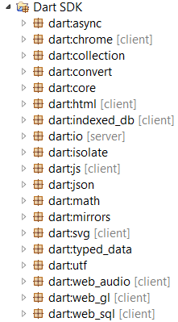

Building Complex Web Apps with
Dart and Web Components
Over the Air, September 2013
Chris Buckett
@chrisbuckett
#dartlang #ota13

Dart addresses two issues:
Performance
&
Complexity
in web applications
Performance
www.dartlang.org/performance/
Complexity
As developers, we need a language that:
Lets us communicate intent to our fellow developer
A Common JavaScript API
// Example Usage
// var client_args = {
// port: 61613,
// host: 'localhost',
// login: 'guest',
// passcode: 'guest',
// };
//
// var client = new Client(client_args);
function Client(args) {
...snip...
if (args.debug) ...?
}
Comments for the how, but often get out of sync.
A better model...?
class ClientArgs {
int port;
String host;
bool debug = false;
String login;
String passcode;
}
// Gets a client from the cache or
// creates a new client if required
Client getClient(ClientArgs args) {
...snip...
}
Comments for describing the what and why, code describes the how.
Communication...

Problem Solved?
Server-side
Thick client
? In the browser
Java / GWT (Google Web Toolkit)
/**
* @param person The person to greet
* @param greeting The greeting
* @return The personalized message
*/
public String greet(
Person person, String greeting) {
String result = greeting +" "+ person.name;
return result;
}
JavaScript + Annotations
var greet = function(person, greeting) {
var result = greeting +" "+ person.name;
return result;
};
JavaScript + Annotations
/**
* @param {foo.Person} person
* The person to greet
* @param {string} greeting The greeting
* @return {string} The personalized message
*/
var greet = function(person, greeting) {
// @type {string}
var result = greeting +" "+ person.name;
return result;
};
It is possible for these two worlds to meet...
It is possible for these two worlds to meet...
// javascript
function greet(person, greeting) {
var result = greeting +" "+ person.name;
return result;
}
// dart
String greet(Person person, String greeting) {
var result = greeting +" "+ person.name;
return result;
}
So, what is Dart?

Familiar
Unsurprising Class Based OOP
class Person {
String name;
}
class Customer extends Person {
int accountNo;
Address address = new Address();
}
class Address {
List<String> lines = new List<String>(4);
String postcode;
}
Functional
Functions are objects
greet(person, greeting) {
var result = greeting + " " + person.name;
return result;
}
// store greet() in another variable
var myFunc = greet;
var me = new Person()..name="Chris";
myFunc(me,"Hello");
Optionally Typed
Add type information as needed
class Person {
var name;
}
class Customer extends Person {
var accountNo;
var address = new Address();
}
class Address {
var lines = new List(4);
var postcode;
}
Optionally Typed
Add type information as needed
class Person {
String name;
}
class Customer extends Person {
int accountNo;
Address address = new Address();
}
class Address {
List<String> lines = new List<String>(4);
String postcode;
}
How does this help us?
Communicating intent through code, to tools and humans
// javascript
function greet(person, greeting) {
var result = greeting +" "+ person.name;
return result;
}
// dart - no type information
greet(person, greeting) {
var result = greeting +" "+ person.name;
return result;
}
How does this help us?
Communicating intent through code, to humans and tools
// javascript
function greet(person, greeting) {
var result = greeting +" "+ person.name;
return result;
}
Use type annotations on the surface area of your code
// dart - with type information
String greet(Person person, String greeting) {
var result = greeting +" "+ person.name;
return result;
}
What is Dart...
The Dart language also has...
- Interfaces
class Person implements Serializable - Privacy
String _iAmPrivate; - Futures
doAsync().then((result) { ... } ); - Lexical scope (sane
this) - Generics
new Map<String,Person>(); - Concurrency
port.send("Hello"); - Reflection
instance.invoke('sayHello',[...]);
What else does Dart have?

Libraries and Packages
library model_objects; // Import libraries & packages import 'dart:json'; import 'package:logger/logger.dart'; // Split library into multiple files part 'src/customer.dart'; part 'src/order.dart'; //... other functions, classes etc ...
Built-in libraries
import 'dart:html';
main() {
var msg = query('#msg'); // use css selectors
// create elements
var btn = new ButtonElement();
btn.text = 'Click me!';
// use callback functions
btn.onClick.listen((e) => msg.text = 'Dart!');
document.body.children.add(btn);
}
Built-in libraries
import 'dart:io';
main() {
HttpServer.bind("127.0.0.1", 8888).then((svr) {
svr.listen((req) {
req.response.write("Hello World\n");
req.response.close();
});
print("Listening at http://127.0.0.1:8888/");
});
}
Built-in Libraries
- dart:html
- dart:io
- dart:unittest
- dart:indexed_db
- dart:web_gl
- dart:web_audio
- lots more ...
Pub: Package Manager
name: my_service
description: My App Service
version:
dependencies:
model_objects:
hosted:
url: http://my-package-server.com
config:
git: git://github.com/chrisbu/config.git
version: 1.2
dev_dependencies:
unittest: any
Built-in libraries help reduce fragmentation.
Teams can work together, sharing versioned packages.
What else is in the box?

Communicating intent through code, to humans and tools.
- Dart Editor
- Dartium
- dart2js
- Dart Debugger
- Dart Analyzer
- DartDoc
Polymer.dart framework
Dart's implementation of PolymerWeb Components
Model Driven Views
Shadow DOM
In all modern browsers
TodoMVC
<!DOCTYPE html> <html lang="en"> <head> <link rel="import" href="app.html"> <!--Import--> <link rel="stylesheet" href="base.css"> <script src="packages/polymer/boot.js"></script> <title>Dart • TodoMVC</title> </head> <body> <todo-app></todo-app> <!--App--> </body> </html>
Polymer Elements
<polymer-element name="click-counter">
<template>
<button on-click="increment">Click Me</button>
<p>You clicked the button {{count}} times.</p>
</template>
<script
type="application/dart"
src="click_counter.dart"></script>
</polymer-element>
Polymer Elements
import 'package:polymer/polymer.dart';
import 'dart:html';
@CustomTag('click-counter')
class ClickCounterElement
extends PolymerElement with ObservableMixin {
@observable int count = 0;
void increment(Event e, var detail, Node target){
count += 1;
}
}
Why Dart appeals to me...
Fast applications
Familiar for developers
Communicating intent through code, to humans and tools.
Web Components for modular working with teams.
Could it be another tool in your toolbox...?
Find out more...
- www.dartlang.org
- #dartlang on G+ or Twitter
- Dartisans group on G+
- +Chris Buckett
- @chrisbuckett
Find out more...
- www.dartlang.org
- #dartlang on G+ or Twitter
- Dartisans group on G+
- +Chris Buckett
- @chrisbuckett